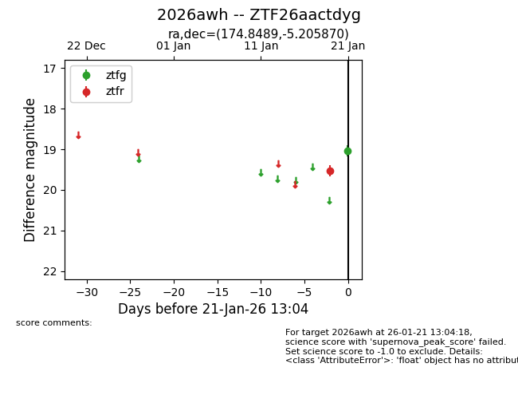
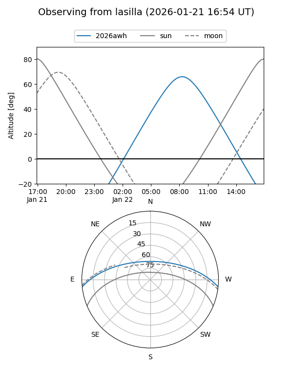
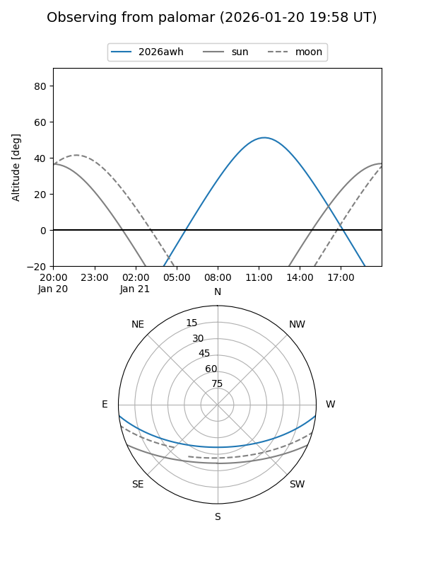

2026awh
Target 2026awh at 2026-01-21 13:06
Aliases and brokers:
FINK: link
Lasair: link
ALeRCE: link
TNS: link
YSE: link
alt names
ZTF26aactdyg (ztf,fink_ztf)
2026awh (tns,yse)
Coordinates:
equatorial (ra, dec) = 174.8489,-5.20587
equatorial (HMS+DMS) = 11:39:23.73,-05:12:21.13
galactic (l, b) = (271.9390,+53.27486)
Flags:
Photometry:
last ztfg=19.04, ztfr=19.53
1 ztfg, 1 ztfr detections
Lightcurve

Visibility


Additional plots